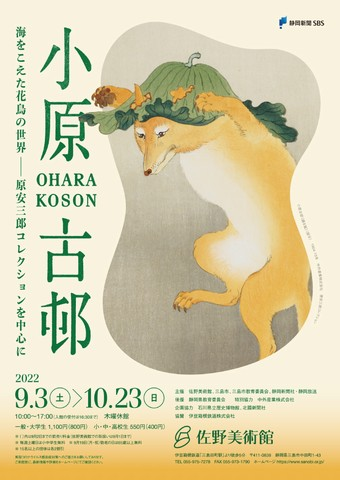

すべて表示
すべて表示 講座 / WS
講座 / WS 読書会
読書会 展示
展示 ログ
ログ ノート
ノート＊ すべて静岡県三島市のイベントです。(2022年)

9月3日 -- 10月23日
小原古邨 海をこえた花鳥の世界
にわか雨に佇む白鷺、雫に濡れた葉蔭の雀、陽ざしのなかに舞う蝶 ― 自然とともにいきる鳥や虫たちの姿が、深く心に刻まれます。
- 【期間】9月3日 -- 10月23日 10時～17時（木曜休館）
- 【場所】佐野美術館 → Google Map
- 【入館料】一般1,100円, 小･中･高校生550円, 土曜は小･中学生無料
- 【ウェブサイト】展覧会の詳細

11月7日（月曜）19時〜21時30分
歴史発見講座
世間士・かるのさん
テーマは「青ヶ島還住 ふるさとを取り戻す闘い」です。
伊豆諸島の有人島として南端に位置する青ヶ島。伊豆諸島の中でも自然の地形に恵まれ、飢え死にする者が居ない豊かな島だった。
江戸時代、有史以来の火山の猛威が襲い島民の多くが死に、生き残った人々は八丈島へと避難を余儀なくされた。
荒れ果てたふるさとを一から立て直し、数十年に亘る帰島への苦闘を追って行きます。
- 【日時】 11月7日（月曜）19時〜21時30分
- 【場所】 カフェ・うーるー（バス停「一本松」すぐ）→ Google Map
- 【参加費】 500円＋１オーダー（予約不要）
- 【ウェブサイト】 軽野造船所